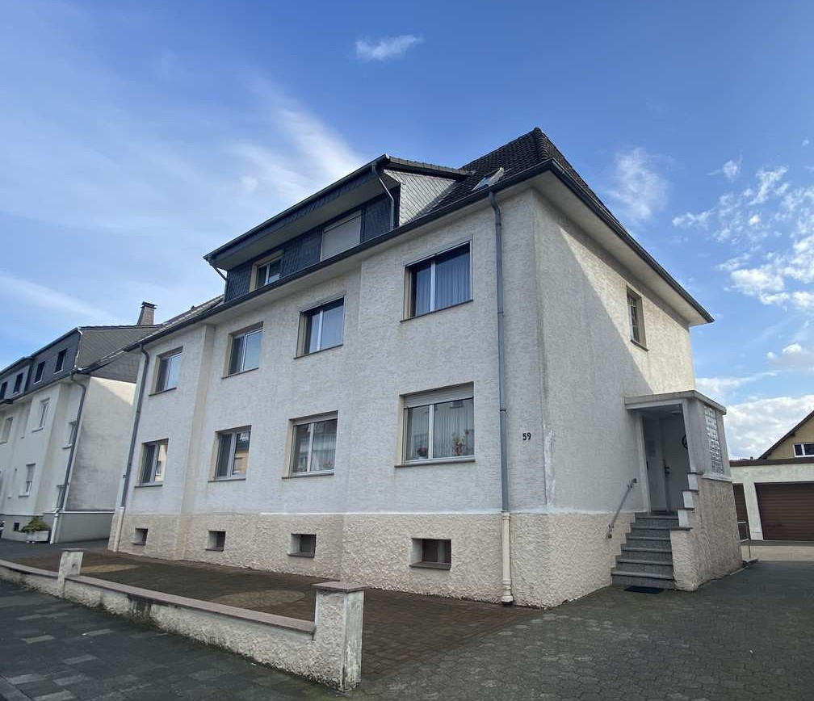
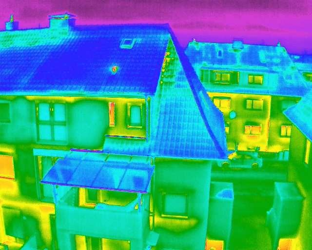
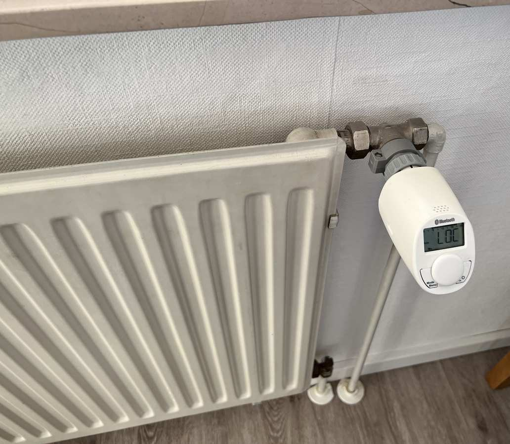

10 bis 12 Uhr, Mälzerstraße 59
Eintritt frei, keine Anmeldung nötig. Gezeigt wird alles von außen. Die Wohnungen sind bewohnt und bleiben geschlossen.

Einblasdämmung live an einem Haus von 1936 in der Südstadt. Was Sie heute sehen, was es bringt und wie Sie bei Ihrem eigenen Haus anfangen.
Zum Mitnehmen · Mälzerstraße 59, 33098 Paderborn · elg-pb.de
Liebe Nachbarinnen und Nachbarn, heute wird in der Mälzerstraße 59 eine Hauswand gedämmt, und Sie können dabei zuschauen. Das Haus ist von 1936 und steht für viele Gebäude in der Südstadt: Seine Außenwand besteht aus zwei Mauerschalen mit einer Luftschicht dazwischen. Ein Fachbetrieb füllt diese Luftschicht heute von außen mit Dämmstoff.
Dieses Heft fasst zusammen, was Sie sehen, was die Maßnahme bringt und wie Sie bei Ihrem eigenen Haus vorgehen können. Fragen Sie die Fachleute vor Ort, dafür sind sie da.
Das Amt für Umweltschutz und Grünflächen der Stadt Paderborn, das Team der Aktion „Energiesparen leicht gemacht“, der ausführende Dämm-Fachbetrieb sowie Energieberaterinnen und Energieberater aus dem Verein EnergieXperten Paderborn. Alle beantworten Ihre Fragen neutral und unverbindlich.
U-Wert in W/(m²K): Rechenwerte für eine typische Wand aus zwei Ziegelschalen mit 6 cm Luftschicht, nachher gefüllt mit Dämmstoff der Wärmeleitstufe 035. Ihr Haus kann abweichen. Verfahren nach dem Dämmatlas (IPEG-Institut, Paderborn); Lochgrößen und Raster: Erfahrungswerte aus Angeboten regionaler Fachbetriebe, 2026.
Viele Häuser in der Südstadt stammen aus den Jahrzehnten vor und nach dem Zweiten Weltkrieg und wurden zweischalig gemauert: innen die tragende Wand, außen eine zweite Schale, dazwischen eine Luftschicht von wenigen Zentimetern. Sie sollte Schlagregen abhalten.
Heute ist diese Luftschicht der größte Schwachpunkt der Wand. Die Luft darin bewegt sich und ist über Fugen mit der Außenluft verbunden, viel Heizwärme entweicht. Die Folgen: hohe Heizkosten, kalte Wände, Schimmelgefahr.
Die gute Nachricht: Genau diese Wände lassen sich mit wenig Aufwand nachträglich dämmen. Die Fassade bleibt, wie sie ist, alles passiert von außen an einem Arbeitstag.

Wärmebild einer Drohnen-Thermografie: Gelbe und rote Flächen zeigen, wo Wärme entweicht.
Quellen: Dämmatlas (IPEG-Institut, Paderborn); Ergebnisse der ersten Runde „Energiesparen leicht gemacht“, elg-pb.de/ergebnisse.
In der Beratung der Aktion gibt es bei zweischaligem Mauerwerk auf Wunsch eine Probebohrung. Fachbetriebe bieten die Endoskopie ebenfalls an.
Der U-Wert in W/(m²K) sagt, wie viel Wärme durch einen Quadratmeter Wand verloren geht. Nach der Einblasdämmung sinkt der Verlust durch die Wand rechnerisch um rund 70 Prozent. Spürbar sofort: wärmere Wandoberflächen, weniger Zugluft, weniger Schimmelrisiko.
Kosten: Erfahrungswert aus aktuellen Angeboten regionaler Fachbetriebe, 2026. Förderung: BEG-Richtlinie Einzelmaßnahmen, Stand Oktober 2026, es gelten die aktuellen Bedingungen von BAFA und KfW, keine Bewilligungszusage. Amortisation: Dämmatlas (IPEG-Institut).
Ein Mehrfamilienhaus von 1915 hat als erstes Paket aus seinem Sanierungsfahrplan die Einblasdämmung und eine neue Haustür umgesetzt. Ergebnis der Berechnung: 32 Prozent weniger Heizwärmebedarf. Gefördert wurden die Kosten damals mit 20 Prozent vom BAFA.
Anonymisiertes Beratungsprojekt in Paderborn, Berechnung nach Sanierungsfahrplan, 2023.
Wer vor der Förderzusage einen Vertrag unterschreibt, verliert den Zuschuss. Also zuerst den Antrag stellen oder den Vertrag mit aufschiebender Bedingung schließen („gilt erst mit Förderzusage“). Alternative: der Steuerbonus nach § 35c EStG, nicht mit dem Zuschuss kombinierbar. Fragen Sie Ihre Steuerberatung.
Für die Mälzerstraße 59 wurde durchgerechnet, wie das Haus Schritt für Schritt vom Energiefresser zum sparsamen Gebäude wird. Die Reihenfolge ist kein Zufall: erst die Hülle, dann die Technik.
Energieeffizienzklassen nach dem Gebäudeenergiegesetz (Anlage 10), wie im Energieausweis. Einstufung dieses Hauses: Berechnung für die Mälzerstraße 59, Stand Oktober 2026.
Jede Dämmmaßnahme senkt die Heizlast, also die Leistung, die die Heizung am kältesten Tag bringen muss. Wer zuerst die Heizung tauscht, kauft sie zu groß und zahlt zweimal. Den Plan dafür erstellt eine Energieberaterin oder ein Energieberater aus der Energieeffizienz-Expertenliste des Bundes (energie-effizienz-experten.de) als individuellen Sanierungsfahrplan, der ebenfalls gefördert wird.

Digitale Thermostate heizen nach Zeitplan. In Runde 1 bei 16 Prozent der Haushalte empfohlen.
Alle Tipps ausführlich: elg-pb.de/spartipps. Umsetzungsquoten: Nachbefragung zur ersten Runde, elg-pb.de/ergebnisse.